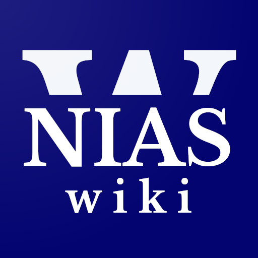

Membebaskan Pengetahuan. Hari Ini dan Esok.
Bersama-sama kita membebaskan pengetahuan dalam berbagai bahasa daerah. Hari ini dan esok. Dari kita dan untuk generasi masa depan (Telah rampung: Wikipedia bahasa Indonesia dan bahasa Nias, serta Wikikamus dan Wikibuku Nias. Wiki dalam bahasa daerah lain masih dalam pengerjaan).
Bebaskan pengetahuan melalui Wikipedia dalam bahasa daerah dengan antarmuka yang elegan.
Kamus bebas yang disusun ramai-ramai. Dari kita, untuk kita dan untuk generasi masa depan.
Koleksi buku teks dan bahan bacaan terbuka lainnya untuk semua orang.